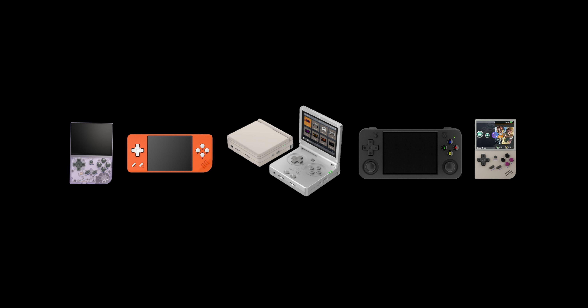
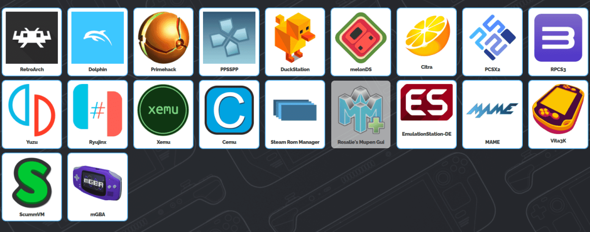

Emulazione / Retrogaming / Software

Gli emulatori sono programmi progettati per riprodurre il comportamento dell'hardware di vecchie console direttamente su PC, smartphone o altri dispositivi moderni. In pratica, permettono al tuo computer di "fingersi" una PlayStation, un Game Boy, un Nintendo DS e così via.
Gli emulatori hanno rivoluzionato il modo di vivere il retrogaming, offrendo vantaggi che le console originali non potevano garantire:
In breve, gli emulatori sono un ponte tra passato e presente, un modo moderno per rivivere la storia dei videogiochi.
Il tema della legalità nell'emulazione è spesso circondato da dubbi e mezze verità. Online si trovano migliaia di ROM, BIOS e giochi scaricabili con un clic, contribuendo a creare l'idea che tutto sia libero e accessibile — ma non è così.
Scaricare e utilizzare un emulatore è perfettamente legale. Gli emulatori sono software legittimi, spesso open source, e non violano alcuna legge.
Le ROM sono i file dei giochi. Usarle è legale solo se possiedi la copia fisica originale del gioco.
Se hai acquistato il gioco → puoi creare la tua ROM e usarla.
Se non possiedi il gioco → scaricare la ROM è illegale, anche se il titolo è vecchio, raro o fuori produzione.

Personalmente mi sono concentrato prevalentemente sull'emulazione delle console portatili Nintendo, in particolare il Nintendo DS e il Nintendo 3DS. Si tratta di due piattaforme che ospitano alcune delle esperienze di gioco più memorabili della storia del gaming portatile, dai titoli Pokémon fino ai grandi RPG, e che meritano di essere vissute anche oggi.
Dopo aver testato diversi software, ho individuato due emulatori che si distinguono nettamente dagli altri per stabilità, fedeltà e semplicità d'uso: MelonDS per il Nintendo DS e Azahar per il Nintendo 3DS. Nelle due schede dedicate trovi tutto quello che devi sapere su come li ho configurati e sui giochi che ho provato.